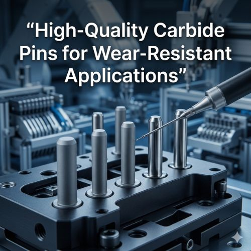

Carbide pins are precision components manufactured using tungsten carbide — a composite material made by combining tungsten and carbon atoms that is significantly harder than steel and highly resistant to wear and deformation. In mechanical systems, these pins serve as alignment guides, locating elements, or wear-resistant contact points. They can withstand extreme operating environments including high pressure, elevated temperatures, and abrasive conditions without suffering the rapid wear typically seen in steel components.
Because of this exceptional reliability, high-quality carbide pins are widely used in precision engineering, tooling systems, automotive components, aerospace assemblies, and industrial machinery worldwide.
Wear is one of the biggest challenges in manufacturing environments. Every time two surfaces interact, friction slowly removes material from the contact area — eventually affecting accuracy, performance, and safety. When pins are exposed to continuous friction or abrasive materials, standard alloys degrade quickly, leading to misalignment, vibration, and mechanical failure. Switching to carbide pins significantly improves equipment lifespan, reduces machine downtime, and ensures consistent system performance over long periods.
High-quality carbide pins offer a rare combination of extreme hardness, high compressive strength, and excellent thermal stability. Carbide is far harder than hardened steel — resisting scratching and abrasion in aggressive environments. Under heavy loads, carbide pins resist deformation while maintaining dimensional stability even when heat from friction would cause ordinary materials to expand or weaken. These properties allow carbide pins to perform reliably in situations where other materials simply cannot survive.
Production begins with carefully selected tungsten carbide powder mixed with a cobalt binder, then compacted into precision molds and sintered at high temperatures to create an extremely dense, hard structure. Precision grinding and finishing ensure exact dimensional specifications. In tooling systems, carbide pins maintain die and mold alignment. Automotive assembly lines rely on them to guide components under continuous stress. Aerospace applications demand their strict tolerance maintenance, and heavy industrial machinery depends on their abrasion resistance under high loads.
Attri Tech Machines Pvt. Ltd. is recognized as a global supplier and leading manufacturer exporter of high-quality carbide pins. With advanced production facilities, years of manufacturing expertise, and rigorous quality control — including raw material testing, in-process dimensional checks, and precision grinding — the company delivers carbide pins that meet strict international standards. Industries worldwide rely on their engineering expertise for components that deliver extended service life, consistent precision, and outstanding wear resistance.
View Product Details at Attri Tech Machines